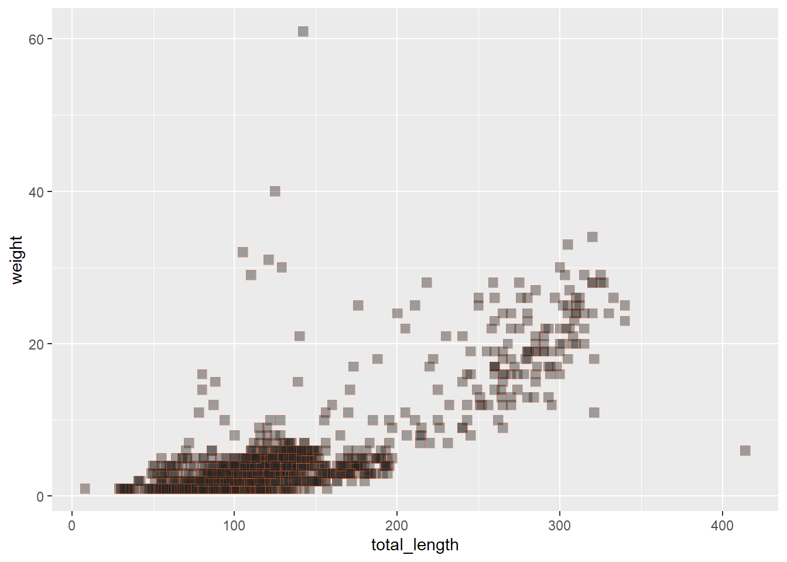

rm(list = ls())data_viz
# General use packages:
library(tidyverse)── Attaching core tidyverse packages ──────────────────────── tidyverse 2.0.0 ──
✔ dplyr 1.1.4 ✔ readr 2.1.5
✔ forcats 1.0.0 ✔ stringr 1.5.1
✔ ggplot2 3.5.1 ✔ tibble 3.2.1
✔ lubridate 1.9.3 ✔ tidyr 1.3.1
✔ purrr 1.0.2
── Conflicts ────────────────────────────────────────── tidyverse_conflicts() ──
✖ dplyr::filter() masks stats::filter()
✖ dplyr::lag() masks stats::lag()
ℹ Use the conflicted package (<http://conflicted.r-lib.org/>) to force all conflicts to become errorslibrary(here)here() starts at C:/Users/Silkie Moth/Desktop/ucsb_stuff/lecture_notes/week_3_EDS_221/r_stuff/day3/eds221-day8-complibrary(janitor)
Attaching package: 'janitor'
The following objects are masked from 'package:stats':
chisq.test, fisher.test# Specifically for plots:
library(patchwork)
library(ggrepel)
library(gghighlight)
library(paletteer)
library(ggExtra)
library(ggbeeswarm)
# And for another dataset we'll explore:
library(gapminder)
# Spatial
library(sf)Linking to GEOS 3.12.1, GDAL 3.8.4, PROJ 9.3.1; sf_use_s2() is TRUElizards <- read_csv(here("data_tidy", "lizards.csv"))Rows: 1628 Columns: 16
── Column specification ────────────────────────────────────────────────────────
Delimiter: ","
chr (10): date, scientific_name, common_name, zone, site, plot, spp, sex, rc...
dbl (6): pit, toe_num, sv_length, total_length, weight, pc
ℹ Use `spec()` to retrieve the full column specification for this data.
ℹ Specify the column types or set `show_col_types = FALSE` to quiet this message.ggplot(data = lizards, aes(x = total_length, y = weight)) + geom_point() + geom_line()# or
ggplot(data = lizards) + geom_point(aes(x = total_length, y = weight))
# or
ggplot() + geom_point(data = lizards, aes(x = total_length, y = weight))playing with plot geometries
ggplot(data = lizards, aes(x = total_length)) + geom_histogram()`stat_bin()` using `bins = 30`. Pick better value with `binwidth`.jitter arbitrarily spreads points around compared to point
ggplot(data = lizards, aes(y = common_name, x = weight)) + geom_jitter()lets make the ugliest graph possible
ggplot(lizards, aes(x = weight)) +
geom_histogram(color = "orange",
fill = "purple",
size = 2,
linetype = "dotted")Warning: Using `size` aesthetic for lines was deprecated in ggplot2 3.4.0.
ℹ Please use `linewidth` instead.`stat_bin()` using `bins = 30`. Pick better value with `binwidth`.color?
coolors.co
shapes?
search r shape codes
ggplot(data = lizards, aes(x = total_length, y = weight)) +
geom_point(color = "#eb5e28",
fill = "#252422",
shape = 22,
size = 3,
alpha = 0.4)
updating an aesthetic based on variable
doing this scale color discrete thing highlights a specific common name
ggplot(data = lizards, aes(x = total_length, y = weight)) +
geom_point(aes(color = common_name,
size = total_length),
alpha = 0.2) +
scale_color_discrete(type = c("#120309", "#95B2B8", "#95B2B8", "#95B2B8", "#95B2B8", "#95B2B8", "#95B2B8"))themes
some cool ones
- theme_minimal()
- theme_bw()
- theme_light()
ggplot(data = lizards, aes(x = site, y = weight)) +
geom_jitter(aes(color = common_name)) +
theme_minimal()axis labels
ggplot(data = lizards, aes(x = total_length, y = weight)) +
geom_point() +
labs(x = "Total length (mm)",
y = "Weight (grams)",
title = "Lizard size")faceting
splits graph into multiple graphs by every value in a variable
ggplot(data = lizards, aes(x = total_length, y = weight)) +
geom_point() +
facet_wrap(~common_name, ncol = 3, scales = "free") +
labs(x = "Total length (mm)",
y = "weight (grams)")facets into groups
groups are, if tail broken or not, sex
sex on y, tails on x
f, j, m merely how sex data was stored
ggplot(data = lizards, aes(x = total_length, y = weight)) +
geom_point() +
facet_grid(sex ~ tail)reordering
fct_reorder()
in this case, reorders common name by highest to lowest count
lizard_counts <- lizards %>%
count(common_name)
ggplot(data = lizard_counts, aes(y = fct_reorder(common_name, n), x = n)) +
geom_col()
putting it all together
ggplot(lizards, aes(x = total_length, y = weight)) +
geom_point(aes(color = common_name, shape = common_name), size = 2) +
theme_void() +
labs(x = "total length (mm)", y = "weight (g)", color = "lizard species") +
facet_wrap(~common_name, scales = "free")Warning: The shape palette can deal with a maximum of 6 discrete values because more
than 6 becomes difficult to discriminate
ℹ you have requested 7 values. Consider specifying shapes manually if you need
that many have them.Warning: Removed 176 rows containing missing values or values outside the scale range
(`geom_point()`).one more
but how to change labels on sex and tail?
ggplot(lizards, aes(y = fct_infreq(common_name))) +
geom_bar(aes(fill = site)) +
theme_dark() +
labs(x = "lizard counts", y = "species") +
facet_grid(sex ~ tail)advanced ggplot customization
when dealing with scales
- dates: scale_*_date()
- continuous variables: scale_*_continuous()
- discrete variables: scale_*_discrete()
ggplot(data = lizards, aes(x = total_length, y = weight)) +
geom_point() +
scale_x_continuous(breaks = c(0, 250, 500),
limits = c(0, 500)) +
scale_y_continuous(breaks = seq(from = 0, to = 70, by = 10),
limits = c(0, 70)) +
theme_light()lizards_counts <- lizards %>% mutate(date = lubridate::mdy(date)) %>% count(date)
ggplot(lizards_counts, aes(x = date, y = n)) +
geom_line() +
scale_x_date(breaks = scales::breaks_width("3 years"), # tick lines are every three years
labels = scales::label_date("'%y")) # labels dates on x axis, % calls year after the apostrophemaking a gradient
ggplot(lizards, aes(x = total_length, y = weight)) +
geom_point(aes(color = weight)) +
scale_color_gradient(low = "red", high = "navy")or
ggplot(lizards, aes(x = total_length, y = weight)) +
geom_point(aes(color = weight)) +
scale_color_gradientn(colors = c("orange", "red", "purple", "navy", "black"))or
ggplot(lizards, aes(x = total_length, y = weight)) +
geom_point(aes(color = weight)) +
scale_color_steps(low = "red", "high" = "black")